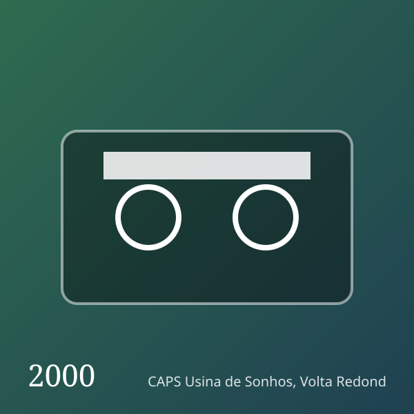

Mágicos do Som, two distinct Saúde Musical CDs (first c. 2000; second 2013)

Background: Mágicos do Som is a music group associated with the CAPS Usina de Sonhos in Volta Redonda, Rio de Janeiro, Brazil. The 2007 UFF thesis by Raquel Siqueira da Silva documents the group's work in the mental-health service context and identifies Regina Lúcia Serrão as composer and singer of “Preconceito” (2000). The thesis reproduces a 1999 clipping showing that the CD was still being prepared, and a November 2000 clipping reporting a launch on the 22nd. The extracted copy does not make the exact event date fully unambiguous, so the first Saúde Musical CD is dated c. 2000, not assigned a precise day.
Where and when: CAPS Usina de Sonhos, Volta Redonda, Rio de Janeiro, Brazil; Date(s): Group formed 1996; first CD c. 2000; second CD launched 13 Nov 2013; Medium: Two distinct CDs; first includes “Preconceito”; second has ten songs (six titles named in notice)
Why it's here: Brazilian CAPS community mental-health group; two separately documented CD objects, with group-authored songs.